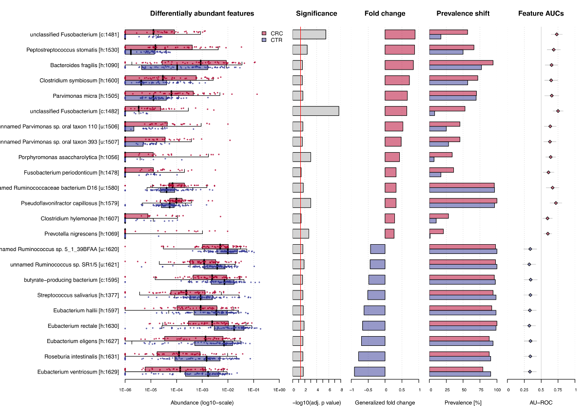
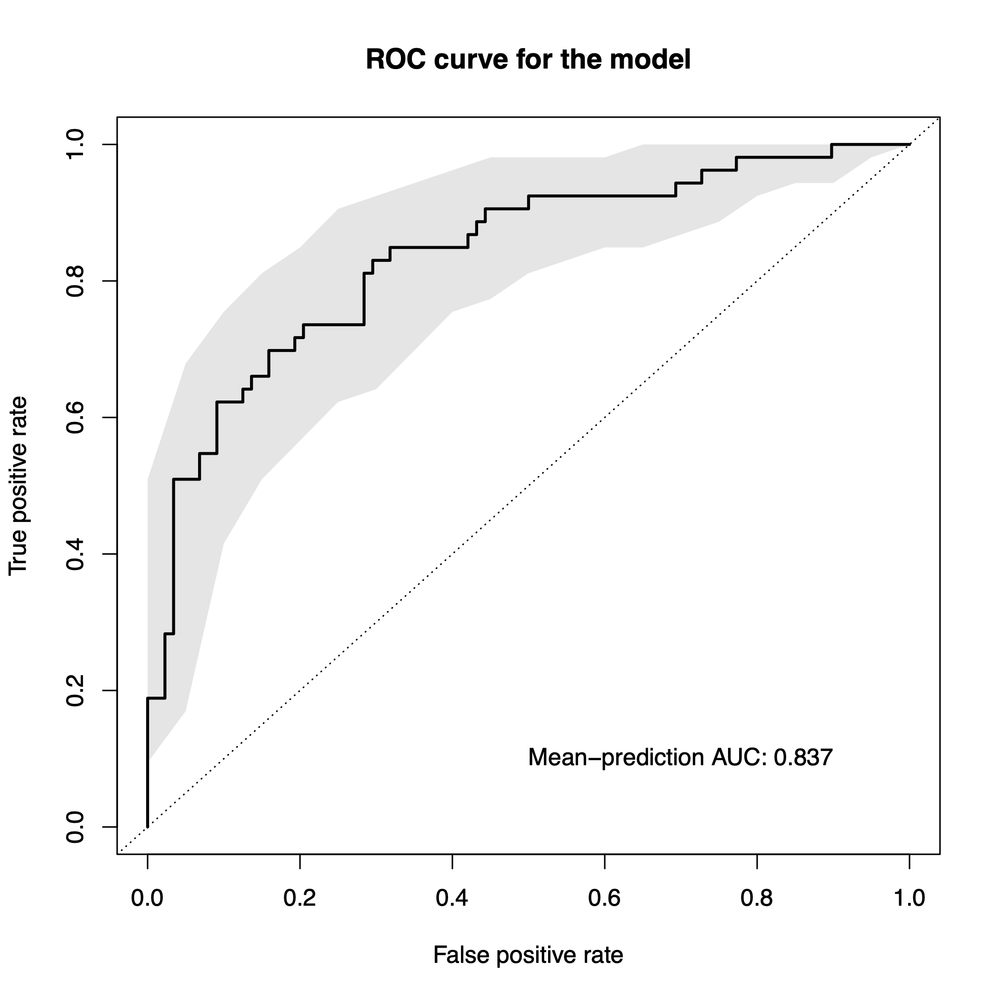

SIAMCAT: Statistical Inference of Associations between Microbial Communities And host phenoTypes
Konrad Zych, Jakob Wirbel, and Georg Zeller
EMBL Heidelberggeorg.zeller@embl.de
Date last modified: 2020-04-04
SIAMCAT_vignette.RmdAbout This Vignette
This vignette aims to be a short tutorial for the main
functionalities of SIAMCAT. Examples of additional
workflows or more detailed tutorials can be found in other vignettes
(see the BioConductor
page).
SIAMCAT is part of the suite of computational microbiome
analysis tools hosted at EMBL by the
groups of Peer
Bork and Georg
Zeller. Find out more at EMBL-microbiome tools.
Introduction
Associations between microbiome and host phenotypes are ideally
described by quantitative models able to predict host status from
microbiome composition. SIAMCAT can do so for data from
hundreds of thousands of microbial taxa, gene families, or metabolic
pathways over hundreds of samples. SIAMCAT produces
graphical output for convenient assessment of the quality of the input
data and statistical associations, for model diagnostics and inference
revealing the most predictive microbial biomarkers.
Quick Start
For this vignette, we use an example dataset included in the
SIAMCAT package. As example dataset we use the data from
the publication of Zeller et al,
which demonstrated the potential of microbial species in fecal samples
to distinguish patients with colorectal cancer (CRC) from healthy
controls.
library("SIAMCAT")
data("feat_crc_zeller", package="SIAMCAT")
data("meta_crc_zeller", package="SIAMCAT")First, SIAMCAT needs a feature matrix (can be either a
matrix, a data.frame, or a
phyloseq-otu_table), which contains values of different
features (in rows) for different samples (in columns). For example, the
feature matrix included here contains relative abundances for bacterial
species calculated with the mOTU profiler
for 141 samples:
feat.crc.zeller[1:3, 1:3]## CCIS27304052ST-3-0 CCIS15794887ST-4-0
## UNMAPPED 0.589839 0.7142157
## Methanoculleus marisnigri [h:1] 0.000000 0.0000000
## Methanococcoides burtonii [h:10] 0.000000 0.0000000
## CCIS74726977ST-3-0
## UNMAPPED 0.7818674
## Methanoculleus marisnigri [h:1] 0.0000000
## Methanococcoides burtonii [h:10] 0.0000000
dim(feat.crc.zeller)## [1] 1754 141Please note that
SIAMCATis supposed to work with relative abundances. Other types of data (e.g. counts) will also work, but not all functions of the package will result in meaningful outputs.
Secondly, we also have metadata about the samples in another
data.frame:
head(meta.crc.zeller)## Age BMI Gender AJCC_stage FOBT Group
## CCIS27304052ST-3-0 52 20 F -1 Negative CTR
## CCIS15794887ST-4-0 37 18 F -1 Negative CTR
## CCIS74726977ST-3-0 66 24 M -1 Negative CTR
## CCIS16561622ST-4-0 54 26 M -1 Negative CTR
## CCIS79210440ST-3-0 65 30 M -1 Positive CTR
## CCIS82507866ST-3-0 57 24 M -1 Negative CTRIn order to tell SIAMCAT, which samples are cancer cases
and which are healthy controls, we can construct a label object from the
Group column in the metadata.
label.crc.zeller <- create.label(meta=meta.crc.zeller,
label='Group', case='CRC')## Label used as case:
## CRC
## Label used as control:
## CTR## + finished create.label.from.metadata in 0 sNow we have all the ingredients to create a SIAMCAT
object. Please have a look at the vignette about input formats for more
information about supported formats and other ways to create a
SIAMCAT object.
sc.obj <- siamcat(feat=feat.crc.zeller,
label=label.crc.zeller,
meta=meta.crc.zeller)## + starting validate.data## +++ checking overlap between labels and features## + Keeping labels of 141 sample(s).## +++ checking sample number per class## +++ checking overlap between samples and metadata## + finished validate.data in 0.234 sA few information about the SIAMCAT object can be
accessed with the show function from phyloseq
(SIAMCAT builds on the phyloseq data
structure):
show(sc.obj)## siamcat-class object
## label() Label object: 88 CTR and 53 CRC samples
##
## contains phyloseq-class experiment-level object @phyloseq:
## phyloseq@otu_table() OTU Table: [ 1754 taxa and 141 samples ]
## phyloseq@sam_data() Sample Data: [ 141 samples by 6 sample variables ]Since we have quite a lot of microbial species in the dataset at the
moment, we can perform unsupervised feature selection using the function
filter.features.
sc.obj <- filter.features(sc.obj,
filter.method = 'abundance',
cutoff = 0.001)## Features successfully filteredAssociation Testing
Associations between microbial species and the label can be tested
with the check.associations function. The function computes
for each species the significance using a non-parametric Wilcoxon test
and different effect sizes for the association (e.g. AUC or fold
change).
sc.obj <- check.associations(sc.obj, log.n0 = 1e-06, alpha = 0.05)
association.plot(sc.obj, sort.by = 'fc',
panels = c('fc', 'prevalence', 'auroc'))The function produces a pdf file as output, since the plot is optimized for a landscape DIN-A4 layout, but can also used to plot on an active graphic device, e.g. in RStudio. The resulting plot then looks like that: 
Confounder Testing
As many biological and technical factors beyond the primary phenotype
of interest can influence microbiome composition, simple association
studies may suffer confounding by other variables, which can lead to
spurious results. The check.confounders function provides
the option to test the associated metadata variables for potential
confounding influence. No information is stored in the
SIAMCAT object, but the different analyses are visualized
and saved to a combined pdf file for qualitative interpretation.
check.confounders(sc.obj, fn.plot = 'confounder_plots.pdf',
meta.in = NULL, feature.type = 'filtered')The conditional entropy check primarily serves to remove nonsensical variables from subsequent checks. Conditional entropy quantifies the unique information contained in one variable (row) respective to another (column). Identical variables and derived variables which share the exact same information will have a value of zero. In this example, the label was derived from the Group variable which was determined from AJCC stage, so both are excluded.

Conditional Entropy Plot
To better quantify potential confounding effects of metadata
variables on individual microbial features,
check.confounder plots the variance explained by the label
in comparison with the variance explained by the metadata variable for
each individual feature. Variables with many features in the upper left
corner might be confounding the label associations.

Variance Explained Plot
Model Building
One strength of SIAMCAT is the versatile but easy-to-use
interface for the construction of machine learning models on the basis
of microbial species. SIAMCAT contains functions for data
normalization, splitting the data into cross-validation folds, training
the model, and making predictions based on cross-validation instances
and the trained models.
Data Normalization
Data normalization is performed with the
normalize.features function. Here, we use the
log.unit method, but several other methods and
customization options are available (please check the
documentation).
sc.obj <- normalize.features(sc.obj, norm.method = "log.unit",
norm.param = list(log.n0 = 1e-06, n.p = 2,norm.margin = 1))## Features normalized successfully.Prepare Cross-Validation
Preparation of the cross-validation fold is a crucial step in machine
learning. SIAMCAT greatly simplifies the set-up of
cross-validation schemes, including stratification of samples or keeping
samples inseperable based on metadata. For this small example, we choose
a twice-repeated 5-fold cross-validation scheme. The data-split will be
saved in the data_split slot of the SIAMCAT
object.
sc.obj <- create.data.split(sc.obj, num.folds = 5, num.resample = 2)## Features splitted for cross-validation successfully.Model Training
The actual model training is performed using the function
train.model. Again, multiple options for customization are
available, ranging from the machine learning method to the measure for
model selection or customizable parameter set for hyperparameter
tuning.
sc.obj <- train.model(sc.obj, method = "lasso")The models are saved in the model_list slot of the
SIAMCAT object. The model building is performed using the
mlr R package. All models can easily be accessed.
# get information about the model type
model_type(sc.obj)## [1] "lasso"
# access the models
models <- models(sc.obj)
models[[1]]$model## <LearnerClassifCVGlmnet:classif.cv_glmnet>
## * Model: cv.glmnet
## * Parameters: alpha=1, s=0.02981
## * Packages: mlr3, mlr3learners, glmnet
## * Predict Types: response, [prob]
## * Feature Types: logical, integer, numeric
## * Properties: multiclass, selected_features, twoclass, weightsMake Predictions
Using the data-split and the models trained in previous step, we can
use the function make.predictions in order to apply the
models on the test instances in the data-split. The predictions will be
saved in the pred_matrix slot of the SIAMCAT
object.
sc.obj <- make.predictions(sc.obj)
pred_matrix <- pred_matrix(sc.obj)
head(pred_matrix)## CV_rep1 CV_rep2
## CCIS27304052ST-3-0 0.09197911 0.12133887
## CCIS15794887ST-4-0 0.15167414 0.08921955
## CCIS74726977ST-3-0 0.34401535 0.32544187
## CCIS16561622ST-4-0 0.21979245 0.19206815
## CCIS79210440ST-3-0 0.33730175 0.06324943
## CCIS82507866ST-3-0 0.15877907 0.07749619Model Evaluation and Interpretation
In the final part, we want to find out how well the model performed
and which microbial species had been selected in the model. In order to
do so, we first calculate how well the predictions fit the real data
using the function evaluate.predictions. This function
calculates the Area Under the Receiver Operating Characteristic (ROC)
Curve (AU-ROC) and the Precision Recall (PR) Curve for each resampled
cross-validation run.
sc.obj <- evaluate.predictions(sc.obj)## Evaluated predictions successfully.Evaluation Plot
To plot the results of the evaluation, we can use the function
model.evaluation.plot, which produces a pdf-file showing
the ROC and PR Curves for the different resamples runs as well as the
mean ROC and PR Curve.
model.evaluation.plot(sc.obj)
Interpretation Plot
The final plot produced by SIAMCAT is the model
interpretation plot, created by the
model.interpretation.plot function. The plot shows for the
top selected features the
model weights (and how robust they are) as a barplot,
a heatmap with the z-scores or fold changes for the top selected features, and
a boxplot showing the proportions of weight per model which is captured by the top selected features.
Additionally, the distribution of metadata is shown in a heatmap below.
The function again produces a pdf-file optimized for a landscape DIN-A4 plotting region.
model.interpretation.plot(sc.obj, fn.plot = 'interpretation.pdf',
consens.thres = 0.5, limits = c(-3, 3), heatmap.type = 'zscore')The resulting plot looks like this: 
Session Info
## R version 4.2.2 (2022-10-31)
## Platform: x86_64-apple-darwin17.0 (64-bit)
## Running under: macOS Big Sur ... 10.16
##
## Matrix products: default
## BLAS: /Library/Frameworks/R.framework/Versions/4.2/Resources/lib/libRblas.0.dylib
## LAPACK: /Library/Frameworks/R.framework/Versions/4.2/Resources/lib/libRlapack.dylib
##
## locale:
## [1] en_US.UTF-8/en_US.UTF-8/en_US.UTF-8/C/en_US.UTF-8/en_US.UTF-8
##
## attached base packages:
## [1] stats graphics grDevices utils datasets methods base
##
## other attached packages:
## [1] SIAMCAT_2.3.3 phyloseq_1.42.0 mlr3_0.14.1 BiocStyle_2.26.0
##
## loaded via a namespace (and not attached):
## [1] paradox_0.11.0 minqa_1.2.5 colorspace_2.1-0
## [4] ellipsis_0.3.2 rprojroot_2.0.3 XVector_0.38.0
## [7] fs_1.6.1 rstudioapi_0.14 listenv_0.9.0
## [10] mlr3tuning_0.18.0 fansi_1.0.4 codetools_0.2-19
## [13] splines_4.2.2 mlr3learners_0.5.6 PRROC_1.3.1
## [16] cachem_1.0.7 knitr_1.42 ade4_1.7-22
## [19] jsonlite_1.8.4 nloptr_2.0.3 pROC_1.18.0
## [22] gridBase_0.4-7 cluster_2.1.4 BiocManager_1.30.20
## [25] compiler_4.2.2 backports_1.4.1 Matrix_1.5-3
## [28] fastmap_1.1.1 cli_3.6.0 prettyunits_1.1.1
## [31] htmltools_0.5.4 tools_4.2.2 lmerTest_3.1-3
## [34] igraph_1.4.1 gtable_0.3.1 glue_1.6.2
## [37] GenomeInfoDbData_1.2.9 reshape2_1.4.4 LiblineaR_2.10-22
## [40] dplyr_1.1.0 Rcpp_1.0.10 Biobase_2.58.0
## [43] jquerylib_0.1.4 pkgdown_2.0.7 vctrs_0.5.2
## [46] Biostrings_2.66.0 rhdf5filters_1.10.0 multtest_2.54.0
## [49] ape_5.7-1 nlme_3.1-162 iterators_1.0.14
## [52] xfun_0.37 stringr_1.5.0 mlr3measures_0.5.0
## [55] globals_0.16.2 lme4_1.1-32 lifecycle_1.0.3
## [58] beanplot_1.3.1 future_1.32.0 zlibbioc_1.44.0
## [61] MASS_7.3-58.3 scales_1.2.1 lgr_0.4.4
## [64] hms_1.1.2 ragg_1.2.5 parallel_4.2.2
## [67] biomformat_1.26.0 rhdf5_2.42.0 RColorBrewer_1.1-3
## [70] yaml_2.3.7 memoise_2.0.1 gridExtra_2.3
## [73] ggplot2_3.4.1 sass_0.4.5 stringi_1.7.12
## [76] S4Vectors_0.36.2 desc_1.4.2 corrplot_0.92
## [79] foreach_1.5.2 checkmate_2.1.0 permute_0.9-7
## [82] palmerpenguins_0.1.1 BiocGenerics_0.44.0 boot_1.3-28.1
## [85] shape_1.4.6 GenomeInfoDb_1.34.9 matrixStats_0.63.0
## [88] rlang_1.1.0 pkgconfig_2.0.3 systemfonts_1.0.4
## [91] bitops_1.0-7 evaluate_0.20 lattice_0.20-45
## [94] purrr_1.0.1 Rhdf5lib_1.20.0 tidyselect_1.2.0
## [97] parallelly_1.34.0 plyr_1.8.8 magrittr_2.0.3
## [100] bookdown_0.33 R6_2.5.1 IRanges_2.32.0
## [103] generics_0.1.3 DBI_1.1.3 pillar_1.8.1
## [106] mgcv_1.8-42 survival_3.5-5 RCurl_1.98-1.10
## [109] tibble_3.2.0 crayon_1.5.2 uuid_1.1-0
## [112] utf8_1.2.3 rmarkdown_2.20 progress_1.2.2
## [115] grid_4.2.2 data.table_1.14.8 vegan_2.6-4
## [118] infotheo_1.2.0.1 mlr3misc_0.11.0 bbotk_0.7.2
## [121] digest_0.6.31 numDeriv_2016.8-1.1 textshaping_0.3.6
## [124] stats4_4.2.2 munsell_0.5.0 glmnet_4.1-6
## [127] bslib_0.4.2